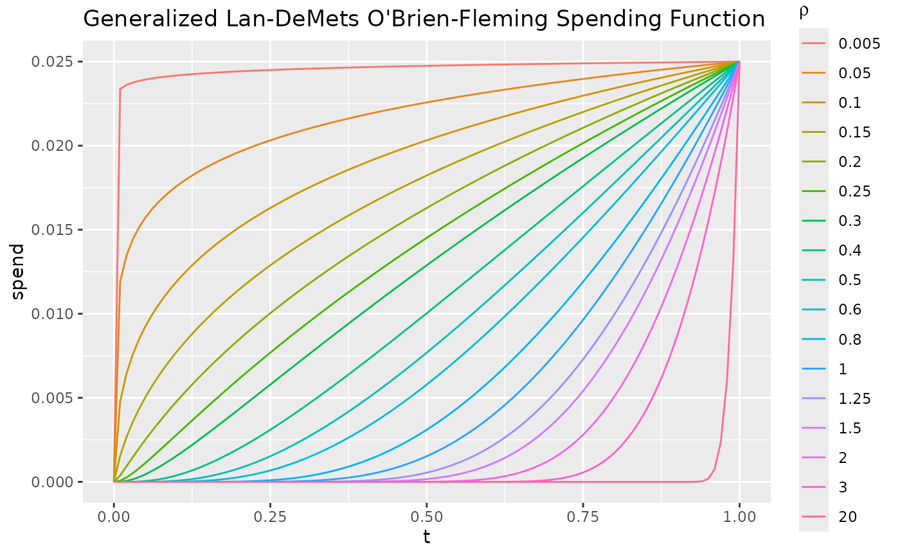

Lan and DeMets (1983) first published the method of using spending functions to set boundaries for group sequential trials. In this publication they proposed two specific spending functions: one to approximate an O'Brien-Fleming design and the other to approximate a Pocock design. The spending function to approximate O'Brien-Fleming has been generalized as proposed by Liu, et al (2012)
With param=1=rho, the Lan-DeMets (1983) spending function to approximate an O'Brien-Fleming
bound is implemented in the function (sfLDOF()): $$f(t;
\alpha)=2-2\Phi\left(\Phi^{-1}(1-\alpha/2)/ t^{\rho/2}\right).$$
For rho otherwise in [.005,2], this is the generalized version of Liu et al (2012).
For param outside of [.005,2], rho is set to 1. The Lan-DeMets (1983)
spending function to approximate a Pocock design is implemented in the
function sfLDPocock():
$$f(t;\alpha)=\alpha ln(1+(e-1)t).$$ As shown in
examples below, other spending functions can be used to ge t as good or
better approximations to Pocock and O'Brien-Fleming bounds. In particular,
O'Brien-Fleming bounds can be closely approximated using
sfExponential.
Arguments
- alpha
Real value \(> 0\) and no more than 1. Normally,
alpha=0.025for one-sided Type I error specification oralpha=0.1for Type II error specification. However, this could be set to 1 if for descriptive purposes you wish to see the proportion of spending as a function of the proportion of sample size/information.- t
A vector of points with increasing values from 0 to 1, inclusive. Values of the proportion of sample size/information for which the spending function will be computed.
- param
This parameter is not used for
sfLDPocock, not required forsfLDOFand need not be specified. ForsfLDPocockit is here so that the calling sequence conforms to the standard for spending functions used withgsDesign(). ForsfLDOFit will default to 1 (Lan-DeMets function to approximate O'Brien-Fleming) ifNULLor if outside of the range[.005,2]. otherwise, it will be use to set rho from Liu et al (2012).
Note
The manual is not linked to this help file, but is available in library/gsdesign/doc/gsDesignManual.pdf in the directory where R is installed.
References
Jennison C and Turnbull BW (2000), Group Sequential Methods with Applications to Clinical Trials. Boca Raton: Chapman and Hall.
Lan, KKG and DeMets, DL (1983), Discrete sequential boundaries for clinical trials. Biometrika;70: 659-663.
Liu, Q, Lim, P, Nuamah, I, and Li, Y (2012), On adaptive error spending approach for group sequential trials with random information levels. Journal of biopharmaceutical statistics; 22(4), 687-699.
Author
Keaven Anderson keaven_anderson@merck.com
Examples
library(ggplot2)
# 2-sided, symmetric 6-analysis trial Pocock
# spending function approximation
gsDesign(k = 6, sfu = sfLDPocock, test.type = 2)$upper$bound
#> [1] 2.495115 2.476907 2.454964 2.437262 2.423276 2.412059
# show actual Pocock design
gsDesign(k = 6, sfu = "Pocock", test.type = 2)$upper$bound
#> [1] 2.453211 2.453211 2.453211 2.453211 2.453211 2.453211
# approximate Pocock again using a standard
# Hwang-Shih-DeCani approximation
gsDesign(k = 6, sfu = sfHSD, sfupar = 1, test.type = 2)$upper$bound
#> [1] 2.507958 2.471981 2.443139 2.426686 2.420302 2.421749
# use 'best' Hwang-Shih-DeCani approximation for Pocock, k=6;
# see manual for details
gsDesign(k = 6, sfu = sfHSD, sfupar = 1.3354376, test.type = 2)$upper$bound
#> [1] 2.469285 2.448341 2.436191 2.437278 2.448837 2.468360
# 2-sided, symmetric 6-analysis trial
# O'Brien-Fleming spending function approximation
gsDesign(k = 6, sfu = sfLDOF, test.type = 2)$upper$bound
#> [1] 5.366558 3.710340 2.969736 2.538677 2.252190 2.044790
# show actual O'Brien-Fleming bound
gsDesign(k = 6, sfu = "OF", test.type = 2)$upper$bound
#> [1] 5.028296 3.555542 2.903088 2.514148 2.248722 2.052793
# approximate again using a standard Hwang-Shih-DeCani
# approximation to O'Brien-Fleming
x <- gsDesign(k = 6, test.type = 2)
x$upper$bound
#> [1] 3.325024 3.103223 2.860383 2.603454 2.330046 2.034988
x$upper$param
#> [1] -4
# use 'best' exponential approximation for k=6; see manual for details
gsDesign(
k = 6, sfu = sfExponential, sfupar = 0.7849295,
test.type = 2
)$upper$bound
#> [1] 4.998123 3.598098 2.933292 2.530838 2.253723 2.047082
# plot spending functions for generalized Lan-DeMets approximation of
ti <-(0:100)/100
rho <- c(.05,.5,1,1.5,2,2.5,3:6,8,10,12.5,15,20,30,200)/10
df <- NULL
for(r in rho){
df <- rbind(df,data.frame(t=ti,rho=r,alpha=.025,spend=sfLDOF(alpha=.025,t=ti,param=r)$spend))
}
ggplot(df,aes(x=t,y=spend,col=as.factor(rho)))+
geom_line()+
guides(col=guide_legend(expression(rho)))+
ggtitle("Generalized Lan-DeMets O'Brien-Fleming Spending Function")
